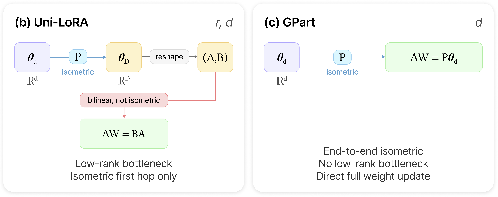
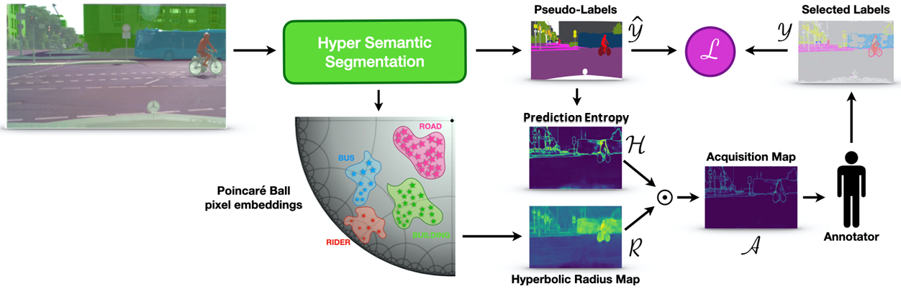
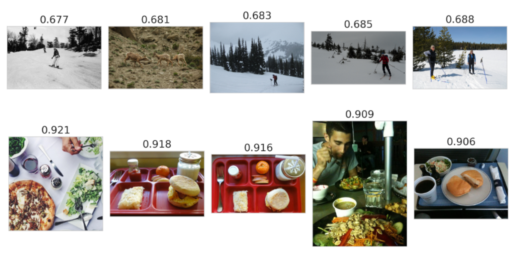

I am a Senior AI Research Scientist at the Samsung AI Center in Warsaw, Poland, where I am part of the Agentic Reasoning Lab. My current research focus is centered around parameter-efficient fine-tuning and agentic reasoning of large multimodal models.
I graguated with a Ph.D. in Computer Science from Sapienza University of Rome in 2025, where I was part of the Perception and Intelligence Lab led by Prof. Fabio Galasso.
Prior to that, I obtained a Master's degree in Data Science from Sapienza University of Rome in 2021 (110/110 cum laude), and a Bachelor's degree in Computer Science and Engineering from Roma Tre University in 2019.
Outside of research, I enjoy spending time in nature, reading, photography, running, playing guitar, and working out.
Get in contact with me at paolomandica.p [at] gmail [dot] com
Now
May 14, 2026 - My new paper "GPart: End-to-End Isometric Fine-Tuning via Global Parameter Partitioning" is out on arxiv.
Research
-

-

View older papers
-

Hyperbolic Learning with Multimodal Large Language ModelsECCV 2024 - Beyond Euclidean Workshop
-

More
Apps
Bare Habits - A minimalist habit tracker for iOS. Focus on what matters, one day at a time. Support Page ->
Teaching
Teaching assistant for these Master's degree courses in Data Science at Sapienza University:
- Fundamentals of Data Science and Laboratory - Fall 2022
- Algorithmic Methods of Data Mining - Fall 2020
Reviewing
Reviewer for the following conferences and journals:
- Neural Information Processing Systems (NeurIPS)
- European Conference on Computer Vision (ECCV)
- International Conference on Image Analysis and Processing (ICIAP)
- IEEE Transactions on Circuits and Systems for Video Technology (TCSVT)
- IEEE Transactions on Image Processing (TIP)
Events
Participated at these events:
- ECCV 2024 - European Conference on Computer Vision - Milan, Italy
- ICML 2024 - International Conference on Machine Learning - Vienna, Austria
- CVPR 2023 - Computer Vision and Pattern Recognition Conference - Vancouver, Canada
- ICVSS 2022 - International Computer Vision Summer School - Scicli (RG), Italy